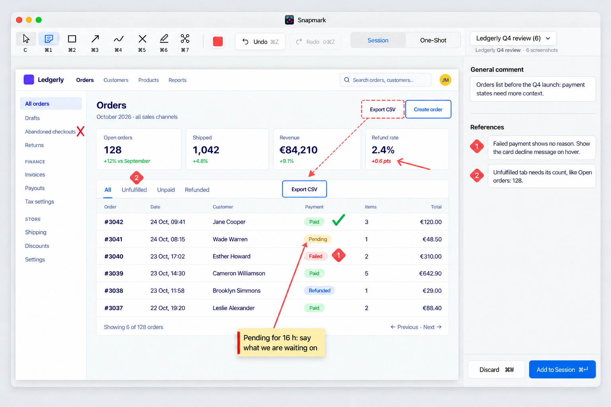
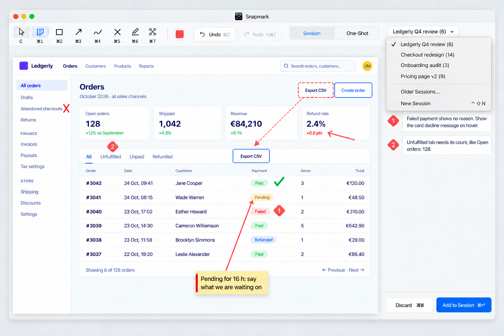
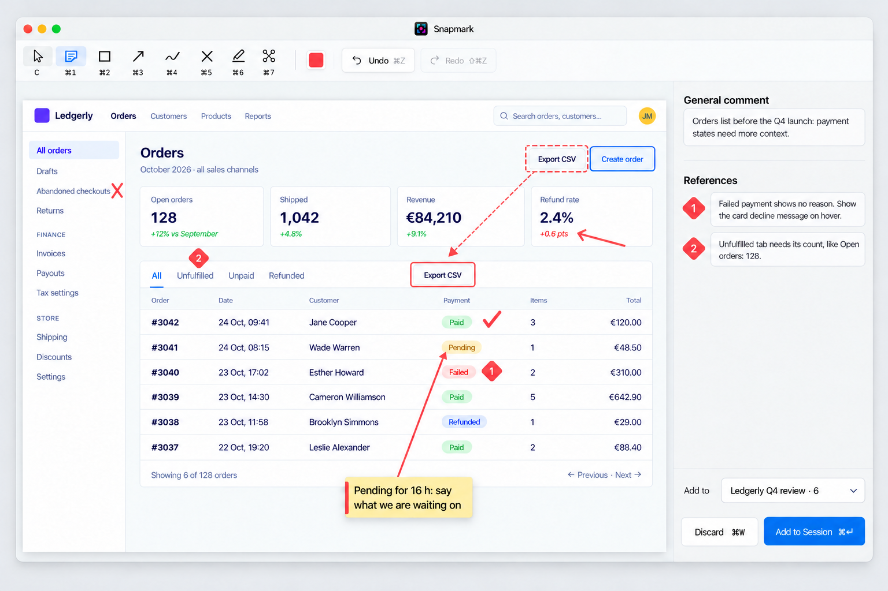
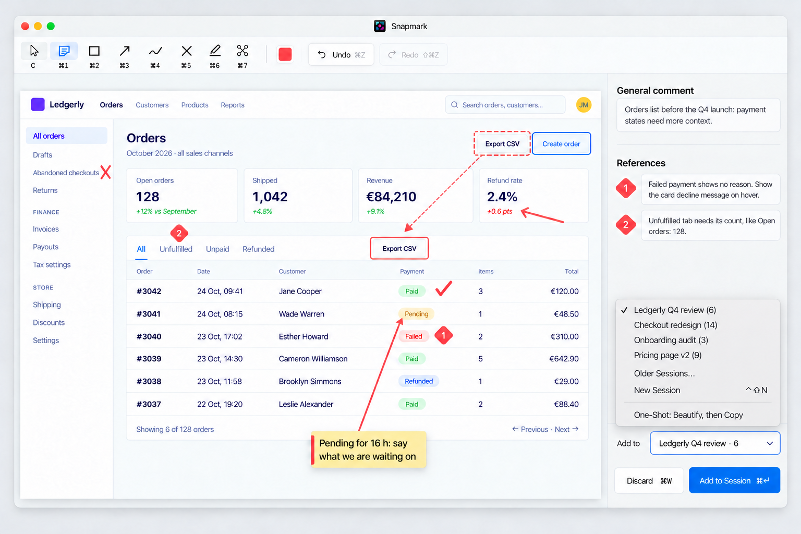
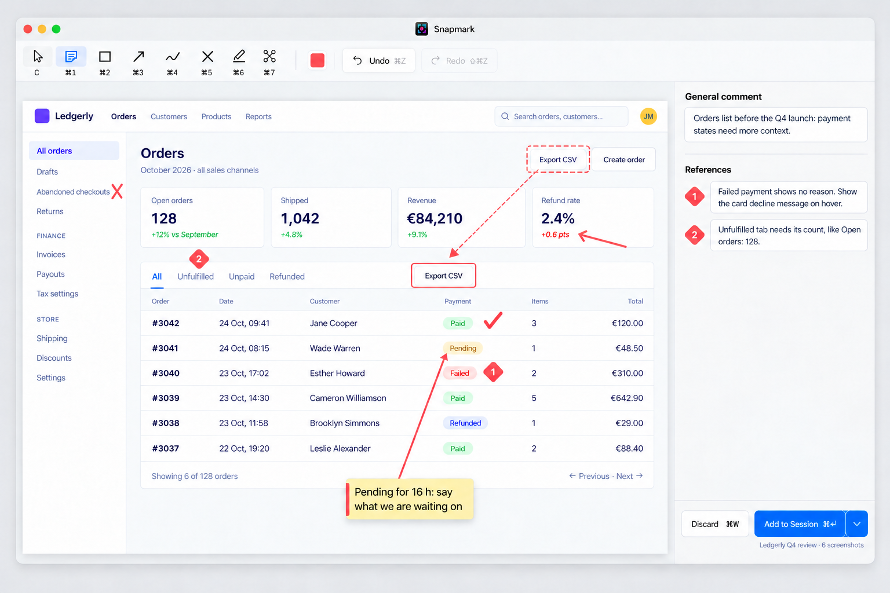
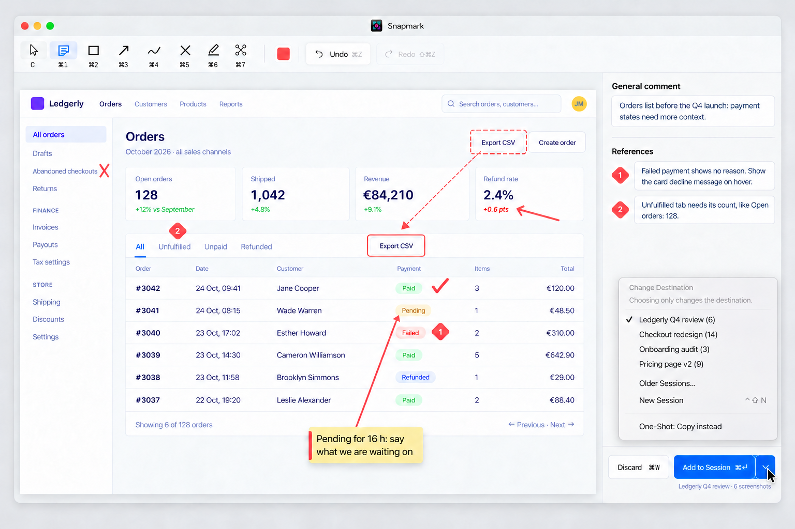

2026-10-26-editor-target · 4 directions · 8 screenshots · generated by Codex, rendered locally
Open live: —
Session versus One-Shot and the session destination live together at the toolbar’s right end, following Xcode’s scheme selector and Preview’s window-wide controls. The grey segmented control makes the two modes visible; the pop-up shows the current session and count, then offers recent sessions, Older Sessions…, and New Session ⌃⇧N in a native menu. Jakob’s Law supports familiar Mac controls, Hick’s Law keeps the occasional destination choice short, and Common Region keeps notes together. Proximity groups mode with destination; the deliberate cost is a longer pointer trip from destination to commit. Von Restorff reserves the single filled blue button for Add to Session. The direction follows KEY-1, EDT-5, NTE-1, NTE-4, NTE-5, WIN-5, WRD-1, and WRD-6, with extra space above each notes heading and a hairline separating general comments from references.


Open live: —
A native “Add to” pop-up sits directly above Discard / Add to Session, following the macOS Save dialog’s “Where:” pattern. Its face shows “Ledgerly Q4 review · 6”; its upward-opening menu groups recent sessions, Older Sessions…, New Session ⌃⇧N, and One-Shot: Beautify, then Copy. Choosing One-Shot changes the column to Beautify and the commit to Copy ⌘↩. Fitts’s Law and Proximity keep destination and commit together; Common Region reserves the column above for notes. Jakob’s Law supports the native pop-up and menu, while the Von Restorff effect gives the sole filled blue button priority. This follows CAP-5’s outcome naming, WIN-5’s bottom-right commit, KEY-1’s New Session shortcut, and capture-bar ADR decision 3’s treatment of One-Shot as a destination. Generous space above headings, a light divider, and coral reference diamonds preserve the notes hierarchy.


Open live: —
The split primary button holds both commitment and destination: Add to Session ⌘↩ performs the add, while its chevron opens an upward native macOS menu that changes only the target. The quiet caption, Ledgerly Q4 review · 6 screenshots, keeps the current destination visible beside the action it affects. Fitts’s Law and Proximity put the rare destination choice at the point of commitment; Common Region keeps the side column for notes; Hick’s Law keeps recent destinations in one short menu; Jakob’s Law preserves native menus, toolbar conventions and Mac keys. One filled blue button follows Von Restorff, while the notes headings, hairline divider and coral numbered diamonds reinforce grouping and correspondence. This follows WIN-5, KEY-1, NTE-1, NTE-4, NTE-5, WRD-2 and ACC-4, and the brief’s outcome-naming interpretation of CAP-5; the menu explicitly says that choosing only changes the destination.

